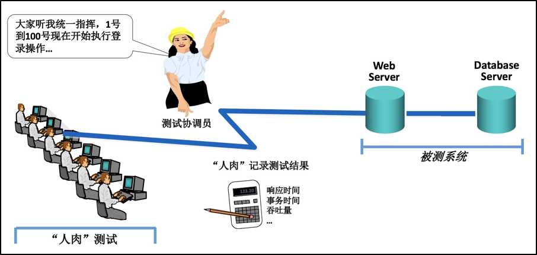
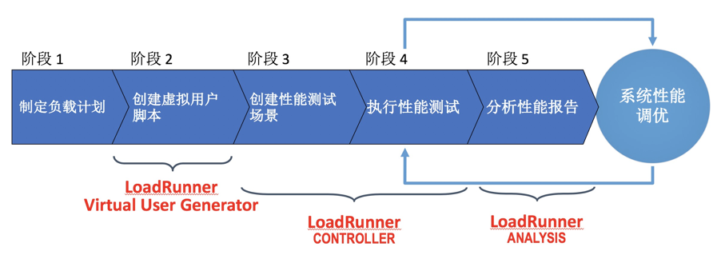

- 00 开篇词 从“小工”到“专家”，我的软件测试修炼之道.md
- 01 你真的懂测试吗？从“用户登录”测试谈起.md
- 02 如何设计一个“好的”测试用例？.md
- 03 什么是单元测试？如何做好单元测试？.md
- 04 为什么要做自动化测试？什么样的项目适合做自动化测试？.md
- 05 你知道软件开发各阶段都有哪些自动化测试技术吗？.md
- 06 你真的懂测试覆盖率吗？.md
- 07 如何高效填写软件缺陷报告？.md
- 08 以终为始，如何才能做好测试计划？.md
- 09 软件测试工程师的核心竞争力是什么？.md
- 10 软件测试工程师需要掌握的非测试知识有哪些？.md
- 11 互联网产品的测试策略应该如何设计？.md
- 12 从0到1：你的第一个GUI自动化测试.md
- 13 效率为王：脚本与数据的解耦 + Page Object模型.md
- 14 更接近业务的抽象：让自动化测试脚本更好地描述业务.md
- 15 过不了的坎：聊聊GUI自动化过程中的测试数据.md
- 16 脑洞大开：GUI测试还能这么玩（Page Code Gen + Data Gen + Headless）？.md
- 17 精益求精：聊聊提高GUI测试稳定性的关键技术.md
- 18 眼前一亮：带你玩转GUI自动化的测试报告.md
- 19 真实的战场：如何在大型项目中设计GUI自动化测试策略.md
- 20 与时俱进：浅谈移动应用测试方法与思路.md
- 21 移动测试神器：带你玩转Appium.md
- 22 从0到1：API测试怎么做？常用API测试工具简介.md
- 23 知其然知其所以然：聊聊API自动化测试框架的前世今生.md
- 24 紧跟时代步伐：微服务模式下API测试要怎么做？.md
- 25 不破不立：掌握代码级测试的基本理念与方法.md
- 26 深入浅出之静态测试方法.md
- 27 深入浅出之动态测试方法.md
- 28 带你一起解读不同视角的软件性能与性能指标.md
- 29 聊聊性能测试的基本方法与应用领域.md
- 30 工欲善其事必先利其器：后端性能测试工具原理与行业常用工具简介.md
- 31 工欲善其事必先利其器：前端性能测试工具原理与行业常用工具简介.md
- 32 无实例无真相：基于LoadRunner实现企业级服务器端性能测试的实践（上）.md
- 33 无实例无真相：基于LoadRunner实现企业级服务器端性能测试的实践（下）.md
- 34 站在巨人的肩膀：企业级实际性能测试案例与经验分享.md
- 35 如何准备测试数据？.md
- 36 浅谈测试数据的痛点.md
- 37 测试数据的“银弹”- 统一测试数据平台（上）.md
- 38 测试数据的“银弹”- 统一测试数据平台（下）.md
- 39 从小作坊到工厂：什么是Selenium Grid？如何搭建Selenium Grid？.md
- 40 从小工到专家：聊聊测试执行环境的架构设计（上）.md
- 41 从小工到专家：聊聊测试执行环境的架构设计（下）.md
- 42 实战：大型全球化电商的测试基础架构设计.md
- 43 发挥人的潜能：探索式测试.md
- 44 测试先行：测试驱动开发(TDD).md
- 45 打蛇打七寸：精准测试.md
- 46 安全第一：渗透测试.md
- 47 用机器设计测试用例：基于模型的测试.md
- 48 优秀的测试工程师为什么要懂大型网站的架构设计？.md
- 49 深入浅出网站高性能架构设计.md
- 50 深入浅出网站高可用架构设计.md
- 51 深入浅出网站伸缩性架构设计.md
- 52 深入浅出网站可扩展性架构设计.md
- 测试专栏特别放送 浅谈全链路压测.md
- 测试专栏特别放送 答疑解惑第一期.md
- 测试专栏特别放送 答疑解惑第七期.md
- 测试专栏特别放送 答疑解惑第三期.md
- 测试专栏特别放送 答疑解惑第二期.md
- 测试专栏特别放送 答疑解惑第五期.md
- 测试专栏特别放送 答疑解惑第六期.md
- 测试专栏特别放送 答疑解惑第四期.md
- 结束语 不是结束，而是开始.md
32 无实例无真相：基于LoadRunner实现企业级服务器端性能测试的实践（上）
你好，我是茹炳晟。今天我和你分享的主题是：无实例无真相之基于LoadRunner实现企业级服务器端性能测试的实践（上）。
从今天开始的两篇文章，我将介绍如何基于LoadRunner实际开展企业级服务器端的性能测试。分享这个主题时，我会从最开始的性能需求获取开始讲起，带你完整地经历一个实际服务器端性能测试项目。通过这个过程，我希望可以帮助你快速建立服务器端性能测试的全局观，并了解各主要步骤的关键技术细节。
听到这里，你可能就有些困惑了。我在分享《工欲善其事必先利其器：后端性能测试工具原理与行业常用工具简介》这个主题时，曾经说到：LoadRunner比较适合于传统软件企业开展性能测试，而JMeter更适用于互联网企业的软件性能测试。那么，为什么我没有选择以JMeter为例来展开后端性能测试呢？
我选择LoadRunner，是经过深思熟虑的，主要原因包括：
JMeter的官方文档对其使用方法介绍得很详细，而且其操作基本属于“傻瓜式”的。JMeter使用的难点在于：如何支持海量并发，以及实现更好的load控制，解决这个问题你可以参考LoadRunner的实现方式，然后从你所在企业的实际业务场景出发，进行二次开发。
互联网企业和传统软件企业的软件产品的后端性能测试，在原理以及基本方法上是基本一致的，区别较大的只是全链路压测。所以，我以传统企业的软件产品为例展开分享，你因此学到的原理以及测试方法将同样适用于互联网软件产品的性能测试。
关于互联网软件产品的全链路压测，由于需要实现海量并发以及流量隔离等操作，所以目前只有一些大型企业在做，比如饿了么、淘宝、ebay、美团等超级大的网站。但是，如果你也想了解全链路压测的话，我也会准备一篇“加餐”文章，和你分享开展全链路压测的难点，以及应对方案。我会更新完性能测试这个系列以后，为你准备这篇“加餐”文章。
为了让你在进行服务器端性能测试时更充分地利用好LoadRunner，所以在正式开始讲解这个测试案例前，我会先给你简单介绍一下LoadRunner的基本原理，以及主要的功能模块。这些功能模块不仅在这个案例中会用到，也会在实际工程项目被经常使用，所以如果你有什么不理解的地方，欢迎给我留言。
LoadRunner的基本原理
你还记得我在《工欲善其事必先利其器：后端性能测试工具原理与行业常用工具简介》这个主题中，介绍过的后端性能测试工具的基本原理吗？
我们先一起来回忆一下吧：
后端性能测试工具首先通过虚拟用户脚本生成器生成基于协议的虚拟用户脚本，然后根据性能测试场景设计的要求，通过压力控制器控制协调各个压力产生器以并发的方式执行虚拟用户脚本，并且在测试执行过程中，通过系统监控器收集各种性能指标以及系统资源占用率，最后通过测试结果分析器展示测试结果数据。
LoadRunner的基本原理，与上面的描述完全一致。在LoadRunner中，Virtual UserGenerator对应的就是虚拟用户脚本生成器，Controller
对应的就是压力控制器和系统监控器，Load Generator对应的就是压力产生器，Analysis对应的就是测试结果分析器。
为了帮助你理解LoadRunner的工作原理和模块，先撇开这些名词不谈，设想一下如果没有专用的后端性能测试工具，我们如何开展后端性能测试。
其实，“人肉”开展后端性能测试也不算太难。这个过程大致是这样的：
- 首先，我们需要一批测试机器，每台测试机器雇佣一个测试人员；
- 然后，我们需要一个协调员拿着话筒发号施令，统一控制这些测试人员的步调，协调员会向所有测试人员喊话，比如“1号到100号测试人员现在开始执行登录操作，100号到1000号测试人员5分钟后开始执行搜索操作”，同时协调员还会要求每个测试人员记录操作花费的时间；
- 测试完成后，测试协调员会要求性能工程师分析测试过程中记录的数据。
这个过程，如图1所示。

图1 如果没有专用的后端性能测试工具，如何“人肉”开展后端性能测试
理解了这种“人肉”模式的后端性能测试后，我们再回过头来看LoadRunner的各个模块就豁然开朗了。
- 测试协调员以及完成数据记录的部分就是Controller模块；
- 大量的测试机器以及操作这些测试机器的人就是Load Generator模块；
- 操作这些测试机器的人的行为就是Virtual User Generator产生的虚拟用户脚本；
- 对测试数据的分析就是Analysis模块。
LoadRunner的主要模块
通过对“人肉”模式和LoadRunner工具的类比，我们可以很清楚的看到，使用LoadRunner进行性能测试，主要需要Virtual User Generator、Controller（这个模块包含了Load Generator），以及Analysis这三大模块组合使用。接下来，我再和你详细聊聊这三大模块的作用，以及需要注意的问题。
第一，Virtual User Generator
Virtual User Generator，用于生成模拟用户行为的测试脚本，生成的手段主要是基于协议的录制，也就是由性能测试脚本开发人员在通过GUI执行业务操作的同时，录制客户端和服务器之间的通信协议，并最终转化为代码化的LoadRunner的虚拟用户脚本。
这样转化得到的虚拟脚本往往并不能被直接使用，还需要经历数据参数化（Parameterization）、关联建立（Correlation），以及运行时设置（Run Time Settings）等操作，然后才能用于性能测试场景中。
具体什么是数据参数化、什么是关联建立、运行时设置都有哪些可选项，我会在分享实例时再详细展开。
第二，LoadRunner Controller
Controller相当于性能测试执行的控制管理中心，负责控制Load Generator产生测试负载，以执行预先设定好的性能测试场景；同时，它还负责收集各类监控数据。
在实际执行性能测试时，Controller是和性能工程师打交道最多的模块，性能工程师会在Controller的UI界面上完成性能测试场景的设计、运行时的实时监控、测试负载的开始与结束等操作。
第三，LoadRunner Analysis
Analysis是LoadRunner中一个强大的分析插件。它不仅能图形化展示测试过程中收集的数据，还能很方便地对多个指标做关联分析，找出它们之间的因果关系。它最根本的目的就是，分析出系统可能的性能瓶颈点以及潜在的性能问题。
现在，你已经了解了LoadRunner的原理和各个模块了，接下来我们就开始实战吧。通过这个实战，我希望你可以掌握如何基于LoadRunner进行企业级的性能测试。
从宏观角度来讲，基于LoadRunner完成企业级性能测试，可以划分为五个阶段：
性能需求收集以及负载计划制定；
录制并增强虚拟用户脚本；
创建并定义性能测试场景；
执行性能测试场景；
分析测试报告。
图2清晰地描述了这5个阶段的先后顺序，以及需要LoadRunner各模块发挥作用的部分。接下来，我和你详细聊聊每个阶段的具体工作，以及关键的技术细节。

图2 使用LoadRunner完成企业级后端性能测试的典型流程与步骤
阶段1：性能需求收集以及负载计划制定
其实，无论是进行什么类型的测试，你的第一步工作都是要根据测试目的明确测试的具体需求。企业级的后端性能测试，当然也不例外。
一般情况下，企业级后端性能测试的具体需求，主要包含以下内容：
- 系统整体的并发用户数。比如，高峰时段会有10万用户同时在线；
- 并发用户业务操作的分布情况。比如，20%的用户在做登录操作，30%的用户在做订单操作，其他50%的用户在做搜索操作；
- 单一业务操作的用户行为模式。比如，两个操作之间的典型停留时间，完成同一业务的不同操作路径等；
- 并发用户高峰期的时间分布规律。比如，早上8点会有大量用户登录系统，晚上6点后用户逐渐退出；
- 达到最高峰负载的时间长度。比如，并发用户从0增长到10万花费的总时间；
- …
完成这些点的测试，其实并不复杂。你只要按照这个已经明确的需求，开发后续的测试脚本、设计性能测试场景就可以了。
但是，如果你想要成长为更资深的性能测试工程师，或者已经是性能测试的设计者、资深的性能测试工程师了，那么你就需要全程参与到这些需求的获取和确定中。
其实，在我看来，获取这些测试需求时性能测试中最难的两个工作之一。另一个最难的工作是，测试结果分析与性能问题定位。而其他类似性能测试脚本开发、场景设计等工作看起来很有技术含量，但实际都是一些相对机械性的重复工作。
那为什么获取测试需求难做呢？因为绝大多数情况下没人会明确告诉你具体的性能需求。
对于软件的功能测试来说，如果需求不明确，你可以直接求助于产品经理。
而对性能测试需求来讲，产品经理通常无法准确告诉你用户的各个业务操作所占的百分比，也无法告诉你准确的用户行为模式。产品经理能做的，往往是给出定性描述，然后需要你去计算或者根据过往经验得到具体的定量需求。所以，我们经常会听到产品经理对性能测试人员说：“你是性能专家，你来告诉我性能需求”。
那么，对于性能测试设计人员来说，到底如何获得这个明确的性能需求呢？说到这里，你应该明白了这是一个非常复杂的话题，因为测试目的不同，所用的方法也各不相同。所以，在这次分享中，我也只是可以给你准备一个实际的测试案例，和你分享获取具体测试需求的思考方式。
还记得我在第29篇文章《聊聊性能测试的基本方法与应用领域》中介绍的医院体检的例子吗？假设，产品经理对医院体检的性能要求是“每天支持完成8000个体检”，这个需求看似很具体，但是要转化成实际可操作的性能测试需求，还需要再细化。
首先，你要明确这里的“每天”是否指的是24小时。显然，这取决于产品本身的属性。比如，产品是为单一时区的用户提供服务，还是要面向全球所有时区的用户。那么，根据体检中心的属性，你很容易就可以确定“每天”一定是指8小时的工作时间。因为，体检中心一定是在一个确定的时区，并且不会24小时营业。
然后，你明确了这个8小时后，那么原始需求是不是可以转化为“每小时支持完成1000个体检”？
如果按照这个套路设计后续的性能测试的话，你会发现即使测试顺利完成，并且各项性能指标都达标了，但是一旦上线后，系统还是很有可能被压垮。因为实际情况是，验血往往需要空腹，所以上午往往是体检中心的高峰时段，体检者会在上午集中涌入体检中心。也就是说，这8000个体检并不是平均分布在8小时内完成的，而是有明显的高峰时段。
最后，你可以采用80/20原则对高峰时段的用户负载进行建模，比如80%的体检（6400个）是发生在上午20%的时间（96分钟）里。当然，为了使模型更接近真实的情况，你还应该分析历史数据，然后对该模型做进一步的修正，这也是目前被普遍采用的方法。
另外，在得到了负载模型后，性能测试设计人员往往还会在此基础上加入一定的负载冗余，比如在峰值的基础上再额外放大20%，以增强系统上线后稳定运行的信心。
通过上面这个分析过程，你可以认识到，性能测试需求的定义与计划非常复杂，牵涉到项目的方方面面，不可能通过阅读一两篇文章就快速掌握这一技能，需要不断地沉淀在实战中获得的经验。
制订了性能测试计划后，接下来你就需要根据性能计划中涉及的用户业务操作来开发性能测试的脚本了。比如，前面提到“20%的用户在做登录操作，30%的用户在做订单操作，剩下50%的用户在做搜索操作”，接下来你需要分别开发“用户登录”“下订单”和“搜索”这三个虚拟用户脚本。
在LoadRunner中，开发虚拟用户脚本的工作主要是基于录制后再修改的方式完成的。其中，录制由Virtual UserGenerator基于协议完成，录制后的修改主要是实现参数化、建立关联、建立事务、加入必要的检查点以及加入思考时间。
所以，我会在下次分享时，和你详细讨论这四部分工作的作用，以及具体如何完成。同时，我还会和你分享，企业级服务器端性能测试的后四个阶段如何实现。
总结
今天我和你讨论的主题是，如何基于LoadRunner实现企业级服务器端性能测试。
首先，我用一个“人肉”测试的流程类比，为你介绍了LoadRunner这个工具的基本原理，并分析了Virtual User Generator、Controller（内含Load Generator模块），以及Analysis这3个模块的功能。
然后，从宏观角度，我把整个性能测试过程划分成了五个阶段：性能需求收集以及负载计划制定、录制并增强虚拟用户脚本、创建并定义性能测试场景、执行性能测试场景，以及分析测试报告。
在我看来，这五个阶段最难的两部分工作分别是：明确具体的性能测试需求，以及测试结果分析与性能问题定位。因为这两部分工作，要大量依赖于测试工程师的能力以及经验积累。所以，就像一名优秀的医生一样，优秀的测试工程师，需要在实际的工程项目中不断积累和总结经验。
最后，我以前面文章提到过的体检中心为例，和你详细讨论了如何收集性能需求，以及制定负载计划的内容。我也解释了为什么性能测试的需求不能直接从产品经理那里获得：因为产品经理定义的性能需求层次比较高、比较抽象，要落实到实际可执行的性能测试需求往往需要分析和细化。这也是为什么获取具体的性能需求比较难的一个原因。
思考题
你在实际工作中，是如何获取并细化性能测试需求的呢？
感谢你的收听，欢迎你给我留言。
© 2019 - 2023 Liangliang Lee. Powered by gin and hexo-theme-book.